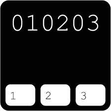
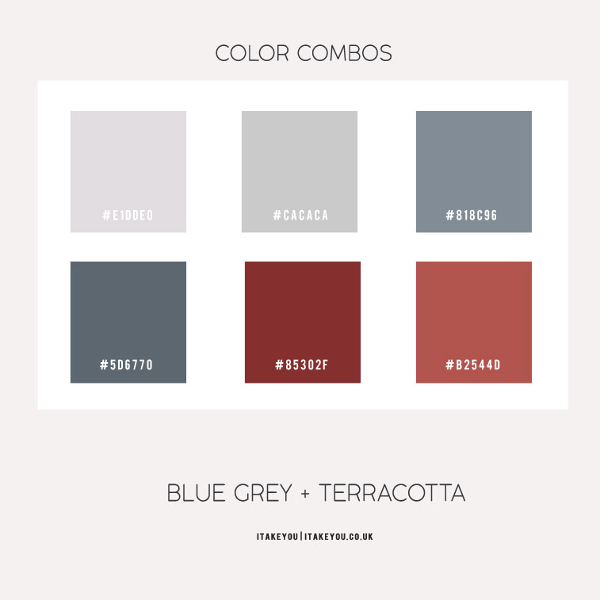

WireFrames
The site makes use of Trigon font as it appears formal yet relaxed, my characters occupation is that of an assassin, yet she works part time as a librarian. The font appears formal as if a librarian would use, but my character is very imformal with how she speaks to try and make the viewer more comfortable.


The next few images are that of the color scheme. The first image is a dark grey with the color code, this is used in the background of the website, The next picture is black this is used to display that the user is currently on a page as well as acting as a hover. The 3rd color is skyblue which is used for the header bar or title of the website as well as certain buttons. The 4th color is white used for fonts, and the last color as to today is sleate gray which is used for most allot more such as table backgrounds, the nav background and footer background. I choose these colors as my characters favorite color is blue and gray works well with the blue. Blue is also a cool and calming color as Maria hopes to make the readers feel welcomed and earn their trust. This is done especailly because Maria aims to help people as stated in her about. Gray works well with the blue as it contrasts it but not to much so it keeps the site easy to look at, and when a picture is added due to the distinct contrast the viewers eye will be drawn to it. Since the colors are so cool and calming in the contract page when the warning appears, it is in red that color is harsh and is designed to give the person who is making the contract second thoughts about hiring Maria.

I decided to change my Nav and Footer bars as well as the Heading Background colors. The color used for the heading background is color code #1167b1 and the color code for the nav and footer bar is #E1DDE0. I choose these colors as they pop out more compared to the skyblue and slategray of the past color codes while being less strenuous to the users eyes. The new blue will be replacing all the Skyblues that were previously on the page. This would have been the same for the previouse slategray however due to the table containing links the new grey would clash with the link color. However the blog pages now have this new color as it still pops out while still being readable.
